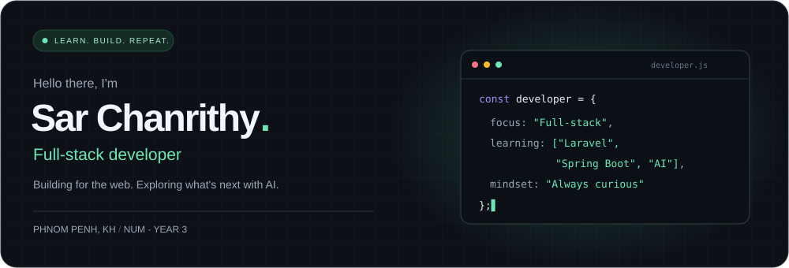
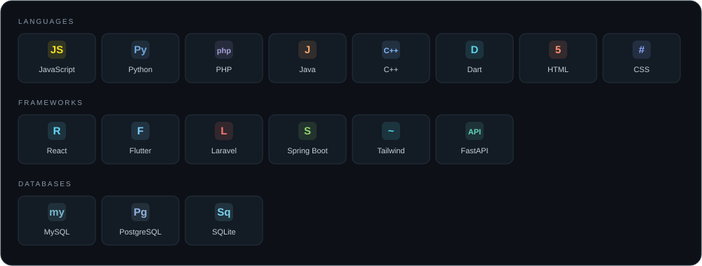
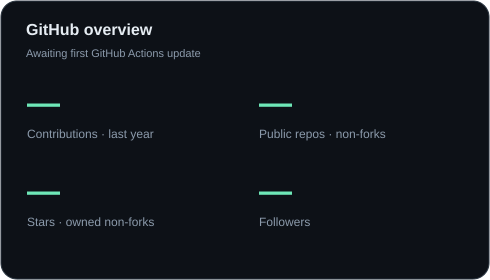
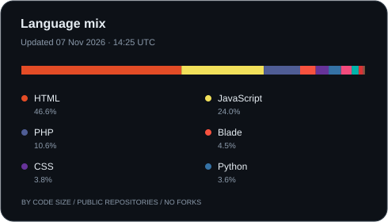
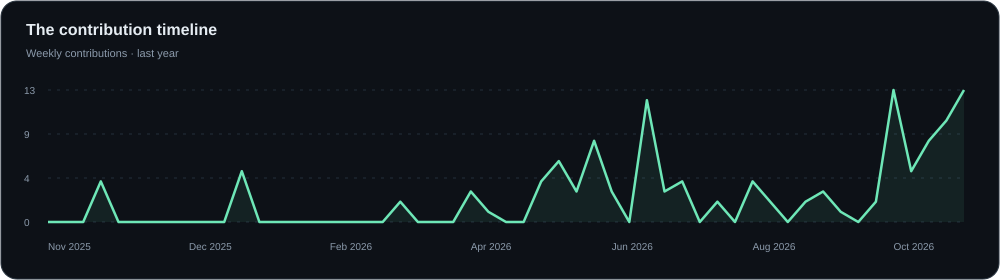
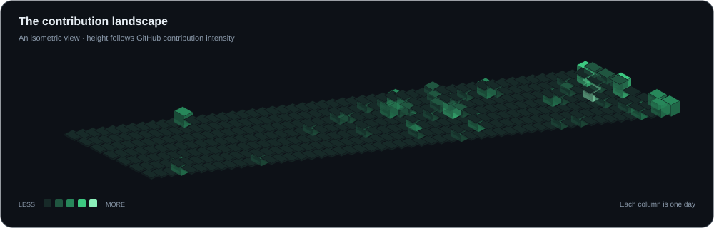

Explore my work / LinkedIn / Telegram
A little about me
I'm Sar Chanrithy, a third-year student at NUM in Phnom Penh, Cambodia.
I build across the web, from interfaces to APIs, and keep learning along the way.
Currently exploring Laravel, Spring Boot, and AI.
01 / THE TOOLKIT
Languages · Frameworks · Tools

02 / BY THE NUMBERS
GitHub at a glance


03 / SHOWING UP
One contribution at a time


Activity over the last year · Language shares measure code size, not proficiency.Let's build something thoughtful.
Open to conversations, learning together, and collaboration.
LinkedIn · Telegram · GitHub